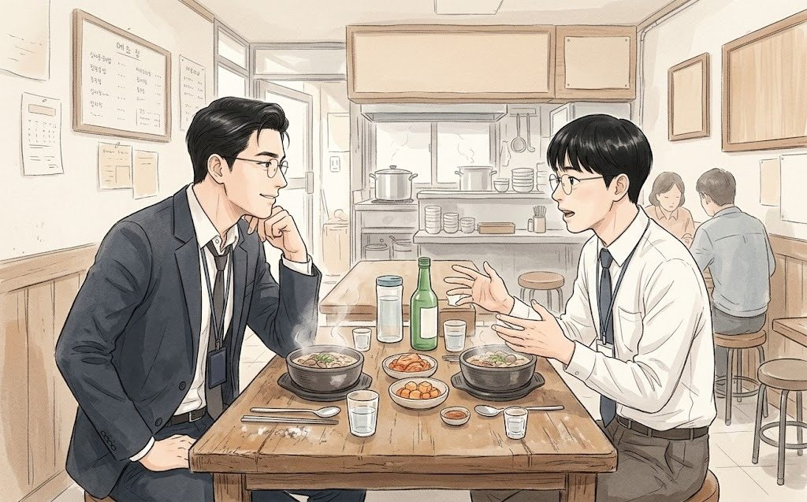
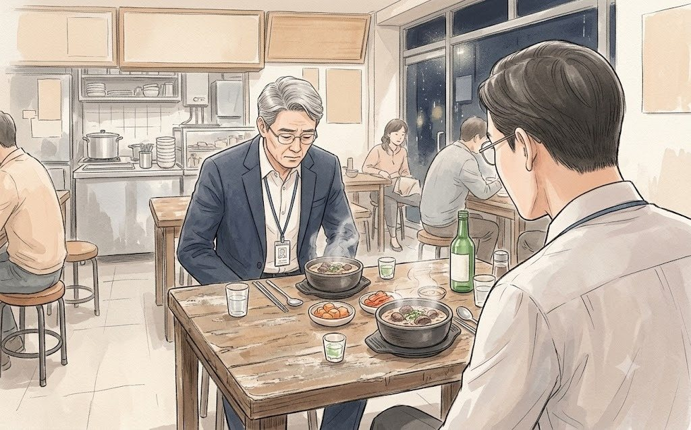
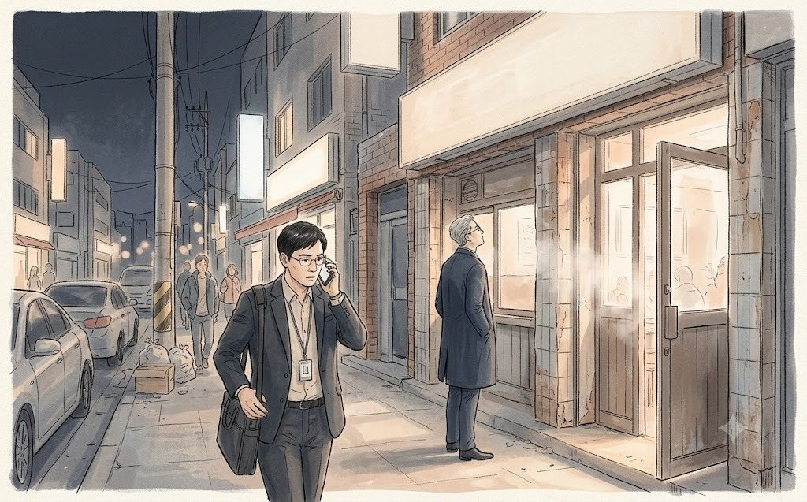

2009년 가을. 한지석은 스물여덟 살, 연구소 2년차였다.
색조 마케팅팀이 신제품 설명회를 앞두고 연구소에서 개발자 한 명을 석 달 동안 빌려 갔는데, 그게 그였다. 흰 가운 대신 넥타이를 맨 지 두 달. 넥타이는 아직 매일 아침 인터넷 동영상을 보며 맸다.
"지석 씨, 오늘 저녁에 손님 한 분 오셔. 같이 가자."
색조 마케팅팀 석태용 부장이었다. 2년 뒤 한지석이 마케팅으로 아예 옮겨 왔을 때 첫 부서장이 되는 사람. 목소리가 크고, 술이 세고, 부하 직원의 이름을 절대 잊지 않는 사람이었다.
"어떤 분이요?"
"홍콩에서 오는 사람. 글로벌 뷰티 회사 아시아 본부 차장인데, 우리가 홍콩 들어갈 때 그 회사 유통망을 빌리기로 했어. 한국 사람인데 거기서 5년째래."
"제가 가도 되는 자리예요?"
"네가 만든 크림 얘기 듣고 싶대. 연구소 출신이 마케팅 왔다니까 궁금하대."
회사 뒤 골목의 순댓국집 「돌담집」. 테이블 여섯 개에 벽에는 기름때가 앉은 메뉴판. 석태용은 굳이 거기를 골랐다. 외국에서 오래 산 한국 사람한테는 이런 게 제일 반가운 법이라고 했다.
권재혁은 정확히 7시에 들어왔다. 회색 양복에 서류 가방 하나. 서른여덟 살이라고 했는데, 한지석이 보기에는 마흔은 넘어 보였다. 눈 밑이 피곤했다.
"권재혁입니다. 늦지 않았죠?"
"딱 맞게 오셨어요. 이쪽은 한지석 연구원. 연구소에서 잠깐 빌려 온 친구."
권재혁은 한지석과 악수하면서 그의 손을 잠깐 내려다봤다.
"손이 거칠지 않네요. 연구소에서 장갑 끼고 일하셨나 봐요."
"네. 3년 내내요."
"무슨 처방 하셨어요?"
그날 밤 권재혁은 순댓국이 식는 줄도 모르고 한지석의 이야기를 들었다. 보습 크림의 유화 안정성, 여름마다 분리되는 제형, 향료를 바꾸면 피부 자극이 줄지만 사람들이 '싸 보인다'고 싫어한다는 이야기. 석태용조차 한 번도 끝까지 들어 준 적 없는 이야기였다.
"그 크림, 지금 팔고 있어요?"
"아뇨. 결재에서 떨어졌습니다."
"왜요?"
"원가가 맞지 않는다고. 그리고 팔 데가 없다고요."
권재혁은 소주잔을 내려놓았다.
"지석 씨. 좋은 처방이 팔리는 구조를 못 만나면, 그건 그냥 연구 노트예요."
그 말을 하고 그는 웃었다. 비웃음이 아니었다. 자기도 같은 일을 겪어 봤다는 웃음이었다.
8시가 넘자 이상한 일이 생겼다.
순댓국집 문이 열리고, 해외사업팀장 진만석 상무가 들어왔다. "권 차장, 여기 있다고 해서." 15분 뒤에는 국내영업사업부장 탁상훈 전무가 왔다. 그다음에는 면세사업부장 함영길 상무가 왔다. 다들 '지나가다 들렀다'고 했다. 테이블 여섯 개짜리 순댓국집이 청연의 임원들로 채워졌다.

한지석은 그제야 알았다. 이 사람이 쥐고 있는 게 홍콩이라는 시장 하나가 아니라는 것을. 아시아로 나가려는 청연에게, 이 피곤한 얼굴의 차장은 문 하나였다.
그런데 권재혁은 이사와 상무들이 올 때마다 일어나 인사만 하고 다시 앉았다. 그리고 한지석에게 물었다.
"아까 그 향료 얘기, 마저 해 봐요."
임원들은 하나둘 돌아갔다. 밤 10시, 테이블에는 처음의 셋만 남았다.
헤어질 때 권재혁이 명함을 건넸다. 영문 명함 뒷면에 볼펜으로 무언가를 적었다.
'한지석 — 유화 안정성. 향료 교체 시 자극 감소.'
"내년에 오면, 이 크림 어떻게 됐는지 물어볼게요."
골목 끝에서 권재혁을 택시에 태워 보낸 뒤, 석태용이 담배에 불을 붙였다.
"지석 씨, 오늘 어땠어?"
"이상했어요. 이사님, 상무님들이 줄줄이 왔는데, 저한테만 계속 물어보시더라고요."
석태용은 연기를 길게 내뿜었다.
"회사에서 오래 가는 사람은 두 종류야. 윗사람을 기억하는 사람, 아랫사람을 기억하는 사람."
"권 차장님은요?"
"아랫사람을 기억하는 사람. 그런 사람은 빨리 올라가진 않아. 근데 올라가면, 사람들이 끝까지 따라가."
"부장님은 어느 쪽이세요?"
석태용은 웃으며 담배를 비벼 껐다.
"나는 둘 다 못 한 사람. 그래서 부장에서 끝날 거야."
그 말은 농담처럼 들렸다. 석태용은 그로부터 6년 뒤, 정말 부장으로 회사를 떠났다. 송별회 날 한지석은 그 골목에서 들은 말을 떠올렸다. 그리고 그날 송별회에 온 사람이 생각보다 적었다는 것도.
다음 해 봄, 권재혁은 정말 다시 왔다. 그리고 회의실 복도에서 한지석을 보자마자 말했다.
"지석 씨, 그 크림 어떻게 됐어요?"
일 년 동안 한 번도 만나지 않은 사람이 자기 이름과 크림을 기억하고 있었다. 한지석이 이 사람을 따르기로 마음먹은 건 그날이었다. 이유는 그것 하나로 충분했다.
2021년 3월, 월요일 저녁 7시 반.
순댓국집은 그 자리에 있었다. 간판은 「돌담집」에서 「돌담순댓국」으로 바뀌었고, 테이블은 여덟 개가 되었고, 벽에는 '5인 이상 입장 불가' 안내문이 붙어 있었다. 둘이 앉기에는 아무 문제가 없었다.
"여기 그대로네요."
권재혁이 메뉴판을 보며 말했다. 메뉴판만은 기름때까지 그대로였다.
"주인은 바뀌었습니다. 예전 사장님은 3년 전에 은퇴하셨대요."
"다 바뀌네. 사람만 남고."
권재혁은 순댓국 두 그릇과 소주 한 병을 시켰다. 12년 전과 똑같은 주문이었다.
한동안 둘은 아무 말 없이 먹었다. 국물이 반쯤 줄었을 때 권재혁이 먼저 입을 열었다.
"아드님, 토요일에 수영 잘 다녀왔어요?"
한지석은 숟가락을 든 채로 멈췄다. 회의가 끝난 아침, 아홉 시 수영 강습에 늦지 않게 보내 준 사람이었다.
"네. 물에 들어가기 무섭다고 울었는데, 끝날 때는 안 나오겠다고 울었습니다."
권재혁이 소리 내어 웃었다. 이 사람이 소리 내어 웃는 걸 한지석은 처음 들었다.
"우리 딸도 그랬어요. 지금은 물 건너가서 안 와요. 런던에 있어요."
"방학 때는 오지 않나요?"
"내가 못 가요."
짧은 대답이었다. 한지석은 더 묻지 않았다. 그리고 권재혁이 물었다.
"그때 그 크림, 결국 어떻게 됐어요? 수결에 들어갔어요?"
한지석은 숟가락을 내려놓았다.
"안 들어갔습니다."
"왜요?"
"팔리는 구조가 없어서요."
권재혁이 웃었다. 12년 전의 그 웃음이었다. 그리고 소주를 한 잔 따라 한지석 앞에 놓았다.
"한 차장. 솔직하게 말할게요."
"네."
"나, 이번에 못 하면 끝이에요."
한지석은 잔을 들지 않았다.
"외부에서 온 임원은 2년이면 성적표를 받아요. 나는 올해가 2년째고. 문 사장님이 토요일 회의를 직접 하겠다는 건, 성적표를 직접 보겠다는 거예요."
"상무님이 끝나면..."
"우리 팀도 끝나겠죠. 백 부장도, 한 차장도. 그래서 하는 말이에요."
권재혁은 잔을 들었다가 내려놓았다. 한지석은 그가 이렇게 망설이는 모습을 처음 봤다.
"미안해요. 한 차장 토요일 다 가져가서."

한지석은 그 말을 오래 기억하게 된다. 12년 동안 이 사람에게서 처음 들은 사과였다. 그리고 그 사과에는 '내일도 그럴 거예요'라는 말이 빠져 있었지만, 둘 다 그걸 알고 있었다.
"상무님."
"응."
"그 크림 처방 노트, 아직 갖고 있습니다."
권재혁이 고개를 들었다.
"이번에는 팔리는 구조, 만들어 보시죠."
권재혁은 대답 대신 잔을 부딪쳤다. 오래된 순댓국집에 맑은 소리가 울렸다.
밤 9시 40분. 순댓국집을 나서는데 한지석의 휴대폰이 울렸다. 백승원이었다.
"지석아, 어디야?"
"상무님이랑 밥 먹고 있어요. 무슨 일이에요?"
"IT플랫폼그룹 노승환 부장이 내일 아침 9시에 회의 잡자고 연락 왔어. 브랜드몰 개선 건."
"잘됐네요."
"근데 목소리가 안 좋아. '각오하고 오시라'고 하더라."

한지석은 권재혁을 돌아봤다. 권재혁은 순댓국집 간판을 올려다보고 있었다. 12년 전에는 없던 간판이었다.
"부장님, 그 사람이 뭐라고 할지 저 알아요."
"뭐라고 하는데?"
"6개월이요."
(EP5 끝)